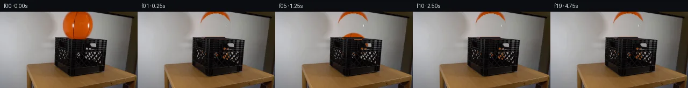

![首帧]()

Round 00
2026-11-05T01:48:56.459636+00:00像素候选变化代码 +227/−0inspection 更新
pixels 184b270becb42fea · code bb3e76107f8cac8f
查看本轮 generate.py 真实 diff
--- previous/generate.py
+++ current/generate.py
@@ -0,0 +1,227 @@
+"""PixelWorld case_0013: basketball released over a black plastic crate.
+
+Method (see METHOD.md for the narrative):
+ * frame 0 is copied byte-exact from first_frame.png;
+ * a clean static plate is built by inpainting the wall behind the ball and
+ neutralising orange rim-band pixels;
+ * the ball is an alpha sprite lifted from frame 0, re-composited at
+ analytically bounce-integrated positions with shutter motion blur;
+ * a static plastic-bar mask is overlaid so the ball is seen through the
+ crate's diamond lattice once inside.
+Pure local numpy/PIL pixel work; no external assets.
+"""
+from pathlib import Path
+import math
+import numpy as np
+from PIL import Image, ImageDraw, ImageFont
+import artifact_io
+
+ROOT = Path(__file__).parent
+H, W = 144, 256
+
+CX, CY0, R = 145.0, 32.5, 27.5
+RIM_Y = 48.0 # front rim top edge
+FLOOR_Y = 84.5 # ball center when resting on crate floor (ball bottom ~112)
+G = 185.0 # px/s^2, tuned so the fall reads clearly at 4 fps
+E = 0.58 # coefficient of restitution
+DT = 0.25
+N_FRAMES = 20
+
+rng = np.random.default_rng(13)
+
+
+# ---------------------------------------------------------------- physics
+def build_events():
+ """Event-driven bounce integration; returns list of (t, y, v_after)."""
+ events = [(0.0, CY0, 0.0)]
+ t, y, v = 0.0, CY0, 0.0
+ for _ in range(40):
+ # smallest non-negative root of 0.5*g*dt^2 + v*dt + (y-FLOOR)=0
+ disc = v * v + 2.0 * G * (FLOOR_Y - y)
+ roots = [(-v + s * math.sqrt(max(disc, 0.0))) / G for s in (-1, 1)]
+ dt_c = min(d for d in roots if d > 1e-6)
+ v_pre = v + G * dt_c
+ t += dt_c
+ y = FLOOR_Y
+ v_post = -E * v_pre
+ if abs(v_post) < 22.0: # settle
+ events.append((t, FLOOR_Y, 0.0))
+ break
+ events.append((t, y, v_post))
+ v = v_post
+ return events
+
+
+EVENTS = build_events()
+
+
+def y_at(time):
+ """Ball center y at arbitrary time >= 0."""
+ if time <= 0:
+ return CY0
+ te, ye, ve = EVENTS[0]
+ for ev in EVENTS[1:]:
+ if ev[0] > time + 1e-9:
+ break
+ te, ye, ve = ev
+ if ve == 0.0:
+ return FLOOR_Y
+ dt = time - te
+ y = ye + ve * dt + 0.5 * G * dt * dt
+ return min(y, FLOOR_Y)
+
+
+# ---------------------------------------------------------------- assets
+first = np.array(Image.open(ROOT / "first_frame.png").convert("RGB"))
+assert first.shape == (H, W, 3)
+
+# --- ball sprite from frame 0 -----------------------------------------
+SX0, SX1, SY0, SY1 = 114, 175, 0, 48
+sprite = first[SY0:SY1, SX0:SX1].astype(np.float32).copy()
+yy, xx = np.mgrid[SY0:SY1, SX0:SX1]
+dist = np.hypot(xx - CX, yy - CY0)
+sr, sg, sb = sprite[..., 0], sprite[..., 1], sprite[..., 2]
+orangeish = (sr - sb > 22.0) & (sr > 100.0)
+coverage = np.clip(28.2 - dist, 0.0, 1.0)
+sprite_a = (orangeish.astype(np.float32) * coverage)
+sprite_a = np.clip(sprite_a, 0, 1)
… diff truncated; 140 more lines …